Capitan America: El primer vengador
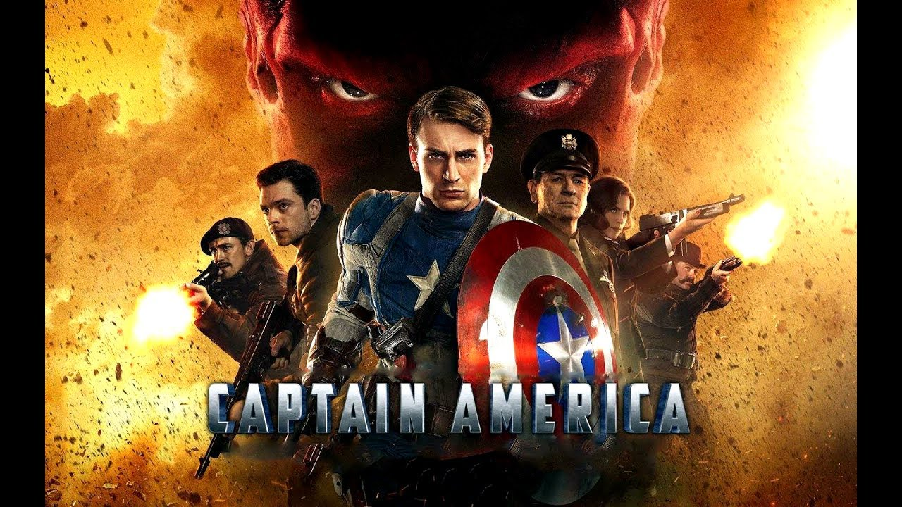Nacido durante la Gran Depresión, Steven Rogers creció como un joven frágil en una familia pobre. Horrorizado por el metraje de los nazis en Europa, Rogers se preparó para alistarse en el ejército. Sin embargo, debido a su fragilidad y enfermedad, fue rechazado. Escuchando la sincera súplica del joven, el general Chester Phillips le ofreció a Rogers la oportunidad de participar en un experimento especial... el Proyecto Renacimiento. Después de semanas de pruebas, Rogers recibió finalmente el Suero del Súper Soldado y fue bombardeado por "rayos vita". Steven Rogers emergió del tratamiento con un cuerpo tan perfecto como un cuerpo capaz y en forma. Rogers fue sometido a un programa intensivo de entrenamiento físico y táctico. Tres meses después, le dieron su primera asignación como el Capitán América. Armado con su escudo indestructible y su habilidad para la batalla, el Capitán América continuó su guerra contra el mal como el centinela de la libertad y como el líder de los Vengadores.
Capitana Marvel

Ambientada en los años 90, esta nueva aventura nos presenta un periodo de la historia nunca antes visto en el Universo Cinematográfico de Marvel. El viaje de Carol Danvers para convertirse en una de las heroínas más poderosas del universo, la Capitana Marvel, miembro de una raza de nobles héroes guerreros. Mientras una guerra galáctica entre dos razas alienígenas llega a la Tierra, Danvers luchará junto a un pequeño grupo de aliados, mientras trata de encontrarse a sí misma para descubrir quién es en realidad.
Iron Man
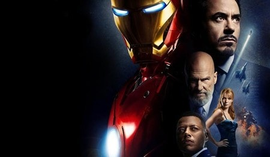La película cuenta la historia de Anthony Stark, un multimillonario industrial y genio inventor, que es secuestrado y obligado a construir un arma devastadora. En su lugar, utilizando su inteligencia e ingenio, Anthony construye una armadura de alta tecnología y escapa de su cautiverio. Cuando descubre un malvado complot con implicaciones globales, se pone su poderosa armadura y jura proteger al mundo como Iron Man.
Iron Man 2
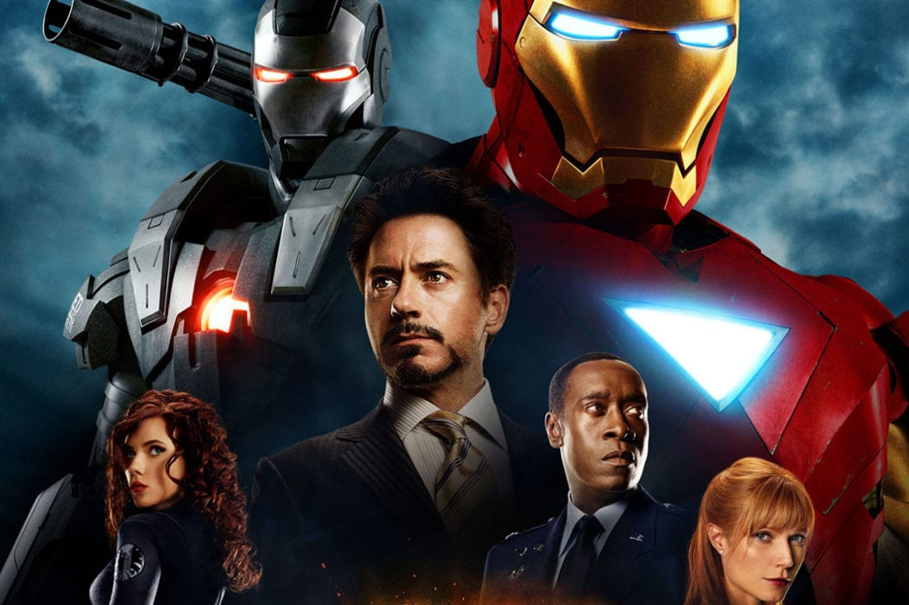Ahora que el mundo es consciente de que él es Iron Man, el inventor multimillonario Anthony Stark enfrenta la presión en todos lados para compartir su tecnología con los militares. Él se resiste a divulgar los secretos de su traje blindado, temiendo que la información caiga en las manos equivocadas. Con Virginia Potts y James Rhodes de su lado, Anthony debe forjar nuevas alianzas y enfrentarse a un nuevo enemigo, Ivan Vanko.
El increible Hulk
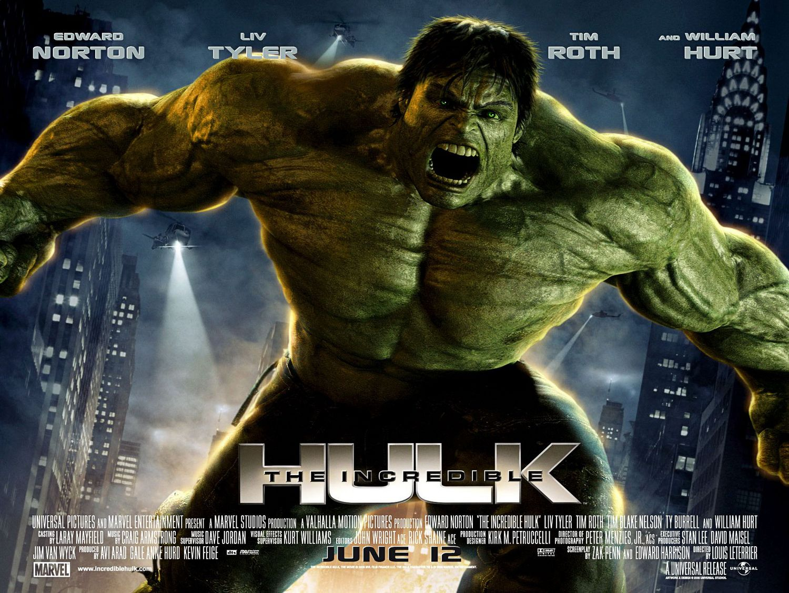El científico Bruce Banner busca desesperadamente una cura para la Radiación Gamma que envenenó sus células y desató una fuerza desenfrenada de ira dentro de él: Hulk. Viviendo en las sombras, aislado de la vida que conocía y de la mujer que ama, Elizabeth Ross - Banner lucha por evitar la obsesiva búsqueda de su enemigo, el general Thaddeus Ross y la maquinaria militar que buscan capturarlo y explotar brutalmente su poder. Mientras los tres lidian con los secretos que llevaron a la creación de Hulk, se enfrentan a un monstruoso nuevo adversario conocido como la Abominación, cuya fuerza destructiva supera incluso a la de Hulk. El científico debe tomar una decisión final agonizante: aceptar una vida pacífica como Bruce Banner o encontrar el heroísmo en la criatura que tiene en su interior: El Increíble Hulk.
Thor

En el centro de la historia está el poderoso Thor, un poderoso pero arrogante guerrero cuyas acciones imprudentes reinician una guerra antigua. Thor es expulsado a la Tierra por su padre Odín y se ve obligado a vivir entre los humanos. Una hermosa y joven científica, Jane Foster, tiene un profundo afecto hacia Thor, quien finalmente se convierte en su primer amor. Mientras está en la Tierra, Thor aprende lo que se necesita para ser un verdadero héroe cuando el villano más peligroso de su mundo envía a las fuerzas más oscuras de Asgard a invadir la Tierra
Avengers
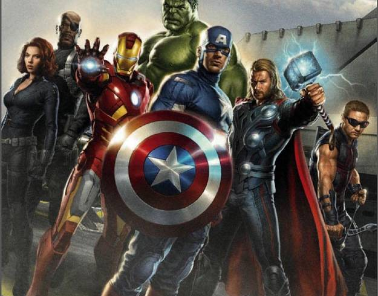El equipo de superhéroes conformado po Anthony Stark / Iron Man, El Increíble Hulk, Thor, Steven Rogers / Capitán América, Clint Barton / Hawkeye y Natalia Romanoff / Black Widow se encuentran en sus tareas habituales, cuando un enemigo inesperado, Loki, el hermano de Thor amenaza con poner en peligro la seguridad mundial, Nicholas Fury, Director de la agencia internacional para el mantenimiento de la paz, conocida con el nombre de S.H.I.E.L.D., necesita encontrar urgentemente un equipo que salve al mundo del mayor de los desastres. Así empieza una búsqueda por todo el mundo para reclutar personal. El equipo se reúne y lucha contra Loki y su ejercito Chitauri para evitar que domine a la humanidad.
Iron Man 3
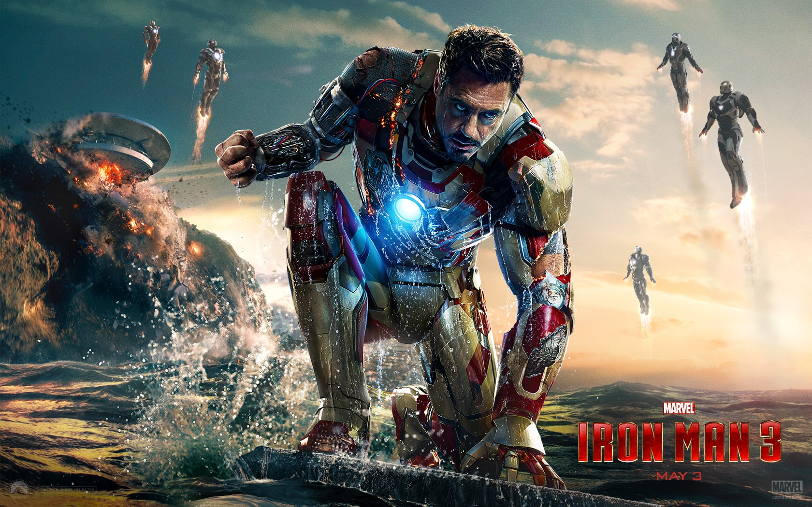Algún tiempo después de los acontecimientos de Los Vengadores, un frecuentado Tony Stark ha construido obsesivamente varios trajes de Iron Man en su mansión. En una retrospectiva de la víspera de Año Nuevo de 1999, Tony, con su amante científica Maya Hansen, ignora a un científico que buscaba ayuda para su proyecto (AIM). En Estados Unidos hoy en día, una serie de atentados terroristas hechos por el Mandarín ha dejado las agencias de inteligencia desconcertadas por la falta de pruebas forenses. En el interior descubre que el Mandarín es en realidad un actor, que es ajeno a los actos del verdadero Mandarín, un hombre llamado Killian. Killian revela que él es el verdadero Mandarín y ha secuestrado a Pepper, además le inyectó Extremis. Posteriormente dan con el presidente que se encuentra en una plataforma petrolera cuidada por soldados con Extremis. En la plataforma, Tony va a salvar a Pepper, James y al Presidente.
Thor: Un mundo oscuro
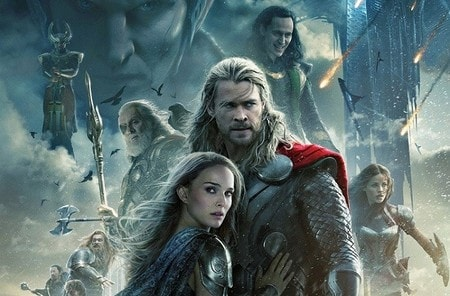A raíz de los sucesos de ‘Thor’ y ‘The Avengers’, Thor lucha por restablecer el orden en todo el cosmos... pero una antigua raza liderada por el vengativo Malekith regresa para volver a sumir al universo en la oscuridad. Thor se enfrenta a un enemigo al que ni siquiera Odín y Asgard pueden hacer frente y deberá embarcarse en su viaje más peligroso y personal. En este viaje se reunirá con Jane Foster y deberá sacrificarlo todo para salvar el mundo.t
Capitan America: El soldado del invierno
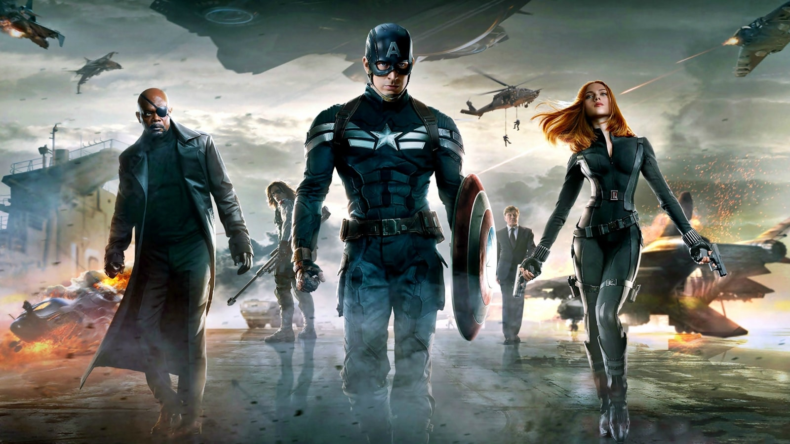Después de los catastróficos acontecimientos ocurridos en Nueva York con ‘The Avengers‘, Captain America: The Winter Soldier presenta a Steven Rogers, alias el Capitán América, viviendo tranquilamente en Washington, D.C. e intentando adaptarse al mundo moderno. Pero cuando un colega de S.H.I.E.L.D. se ve amenazado, Steven se encuentra envuelto en una trama de intrigas que puede poner en riesgo el mundo entero. Uniendo fuerzas con Natalia Romanoff, el Capitán América lucha por desenmascarar la conspiración cada vez mayor mientras pelea contra asesinos profesionales enviados para silenciarlo a cada paso. Cuando el plan malvado es revelado, Steven Rogers y Natalia Romanoff piden la ayuda de un nuevo aliado: Samuel Wilson. Sin embargo, pronto se encontrarán a sí mismos luchando contra un enemigo colosal e inesperado: el Soldado del Invierno.
Guardianes de la Galaxia
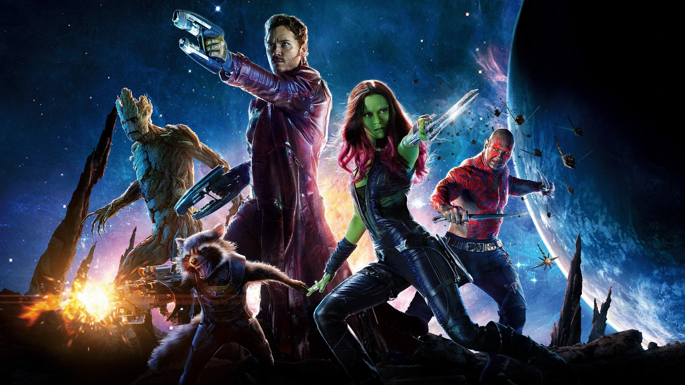Una épica aventura espacial llena de acción, Guardians of the Galaxy expande el Universo Cinematográfico de Marvel hacia el cosmos, donde un aventurero y temerario Peter Quill se encuentra a sí mismo como objeto de una implacable recompensa después de que robase un misterioso orbe buscado por Ronan, un poderoso villano con ambiciones que amenazan todo el universo. Para evitar al siempre persistente Ronan, Quill es forzado a entrar en una incómoda tregua con un cuarteto de dispares inadaptados: Rocket, un mapache pistolero; Groot, un humanoide en forma de árbol; la mortal y enigmática Gamora; y el motivado por la venganza Drax. Pero cuando Peter descubre el verdadero poder del orbe y la amenaza que supone para el cosmos, debe hacer todo lo posible por unir a sus dispares rivales para un último y desesperado intento – con el destino de la galaxia en juego
Guardianes de la Galaxia Vol 2

Guardians of the Galaxy Vol. 2 continúa las aventuras del equipo mientras atraviesan los confines del cosmos. Los Guardianes deberán luchar para mantener unida su recién encontrada familia mientras desentrañan los secretos de la verdadera ascendencia de Peter Quill, su padre que resulta ser Ego, un planeta que es considerado un dios, un celestial. Viejos enemigos se convierten en nuevos aliados.
Avengers: Era de Ultron
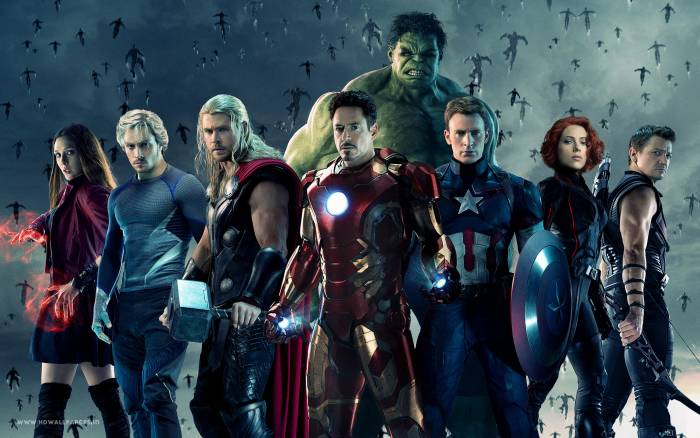Cuando Anthony Stark trata de reiniciar un programa dormido para mantener la paz, las cosas se salen de control y los héroes más poderosos del planeta, incluyendo a Anthony Stark / ron Man, Steven Rogers / Capitán América, Thor, Bruce Banner / Hulk, Natalia Romanoff / Black Widow y Clinton Barton / Hawkeye, enfrentan la prueba definitiva y el destino del planeta está en la balanza. Mientras el villano Ultrón emerge, son los Vengadores quienes deben impedirle finalizar su terrible plan mientras forman difíciles alianzas
Antman

Armado con la sorprendente habilidad de encogerse a escala pero incrementando la fuerza, el maestro ladrón Scott Lang debe abrazar a su héroe interior y ayudar a su mentor, el Doctor Henry Pym, a proteger el secreto que hay detrás del espectacular traje de Ant-Man de una nueva generación de amenazas crecientes. Contra lo que parecen obstáculos insalvables, Pym y Lang deben planear y ejecutar un atraco que salvará el mundo.
Capitan America: Guerra Civil
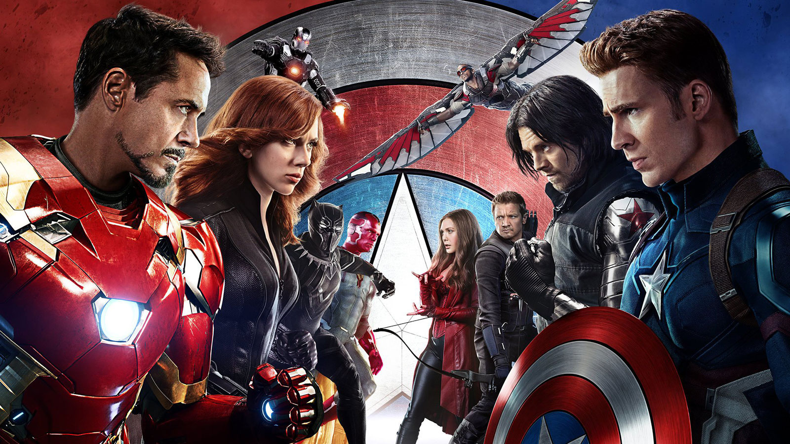Marvel’s Captain America: Civil War presenta a Steven Rogers liderando un recién formado equipo de Vengadores en su esfuerzo continuo de proteger la humanidad. Pero después de otro incidente en el que los Vengadores se ven implicados resulte en daños colaterales, la presión política exige que se instale un sistema de rendición de cuentas, dirigido por un cuerpo de gobierno que supervisará y dirigirá el equipo. El nuevo status quo fractura a los Vengadores, resultando en dos frentes — uno liderado por Steven Rogers y su deseo de que los Vengadores permanezcan libres, y otro que seguirá la sorprendente decisión de Anthony Stark de apoyar la supervisión y rendición de cuentas del gobierno.
Doctor Strange
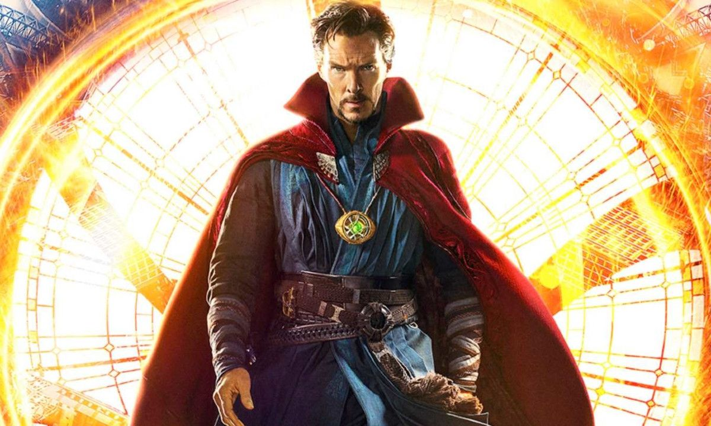Marvel’s Doctor Strange sigue la historia del talentoso neurocirujano Doctor Stephen Strange quien, tras un trágico accidente automovilístico, debe poner a un lado su ego y aprender los secretos del mundo del misticismo y las dimensiones paralelas. Asentado en Greenwich Village en Nueva York, el Doctor Strange debe actuar como intermediario entre el mundo real y lo que aguarda más allá, utilizando un amplio rango de habilidades metafísicas y artefactos para proteger La Tierra.
Spider-Man: Homecoming
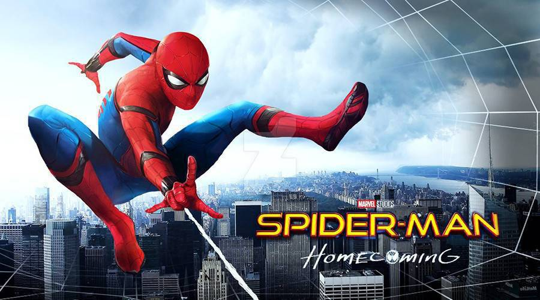Un joven Peter Parker, quien hizo su sensacional debut en ‘Captain America: Civil War’, comienza a experimentar su recién descubierta identidad como el superhéroe lanza-telarañas en Marvel’s Spider-Man: Homecoming. Emocionado por su experiencia vivida con los Vengadores, Peter regresa a casa, donde vive con su tía May, bajo la mirada vigilante de su nuevo mentor Anthony Stark. Peter intenta regresar a su rutina diaria normal – distraído por los pensamientos de demostrarse a sí mismo que es más que el amistoso vecino el Hombre Araña – pero cuando el Buitre emerge como nuevo villano, todo lo que Peter considera lo más importante se verá amenazado.
Pantera Negra
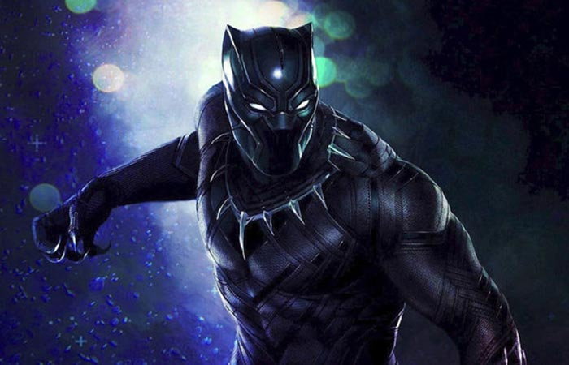Después de los eventos de ‘Captain America: Civil War’, el rey T'Challa regresa a su hogar, a la recluida y tecnológicamente avanzada nación africana de Wakanda, para servir como nuevo líder del país. Sin embargo, T’Challa pronto descubre que es desafiado por el trono por facciones dentro de su propio país. Cuando dos enemigos conspiran para destruir Wakanda, el héroe conocido como Pantera Negra debe formar equipo con el agente de la CIA Everett Ross y miembros de las Dora Milaje, fuerzas especiales de Wakanda, para evitar que Wakanda sea arrastrada hacia una guerra mundial.
Thor: Ragnarok
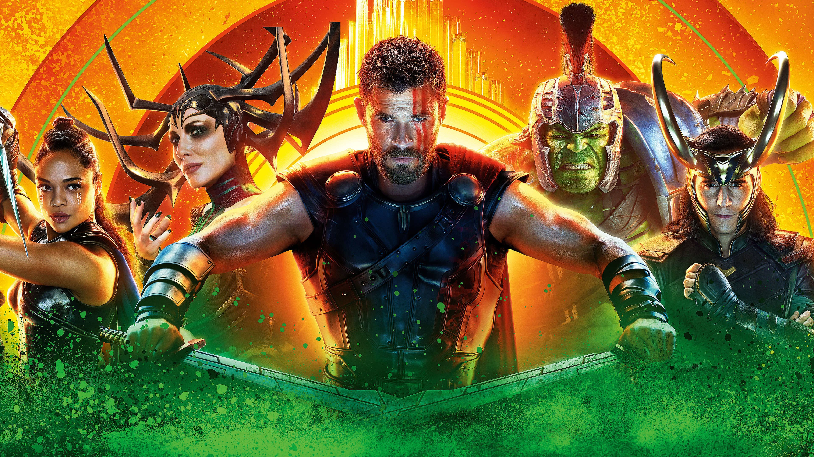El mundo de Thor está a punto de explotar en Marvel’s Thor: Ragnarok. Su retorcido hermano, Loki, ha tomado el control de Asgard, la poderosa Hela ha resurgido para robar el trono y Thor es aprisionado en la otra punta del universo. Para escapar del cautiverio y salvar su hogar de una destrucción inminente, Thor debe ganar una competición alienígena mortal y derrotar a su viejo aliado y compañero Vengador... ¡El Increíble Hulk!
Avengers: Infinity war
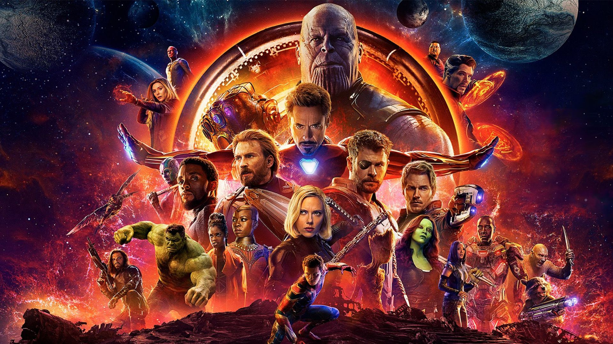A medida que los Vengadores y sus aliados han seguido protegiendo al mundo de amenazas demasiado grandes para que cualquier otro héroe las pueda manejar, un nuevo peligro surge desde las sombras cósmicas: Thanos, un déspota de la infamia intergaláctica, su objetivo es hacerse con las seis Gemas del Infinito para desaparecer a la mitad de los seres vivos del universo.
Avengers: End Game
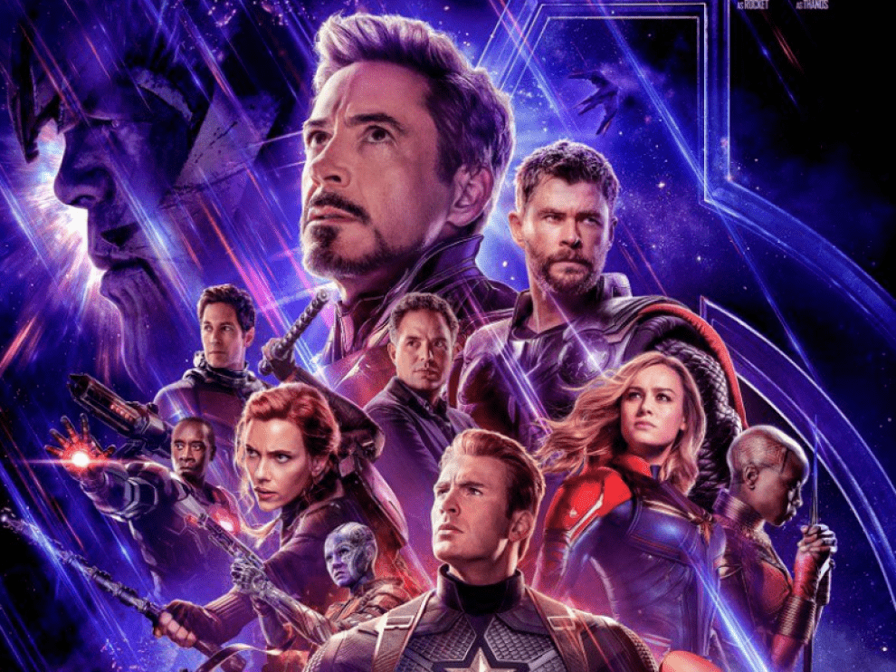Después de los eventos devastadores de ‘Avengers: Infinity War’, el universo está en ruinas debido a las acciones de Thanos, el Titán Loco. Con la ayuda de los aliados que quedaron, los Vengadores deben reunirse una vez más para deshacer sus acciones y restaurar el orden en el universo de una vez por todas, sin importar cuáles sean las consecuencias que pueda tener.